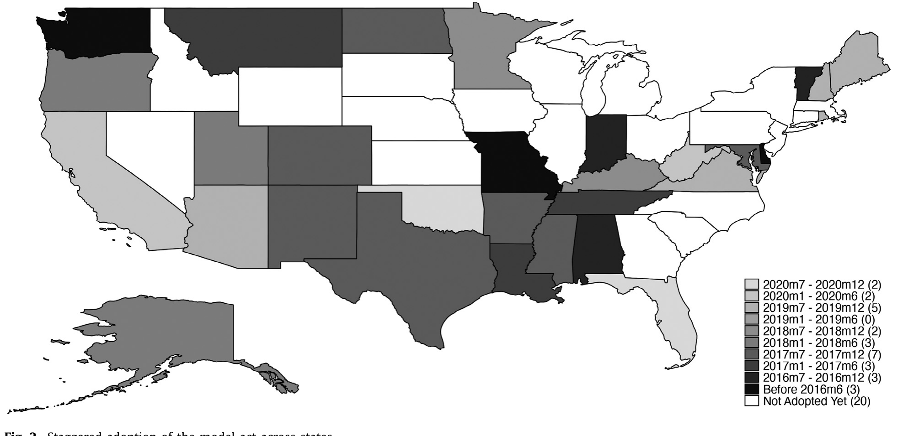
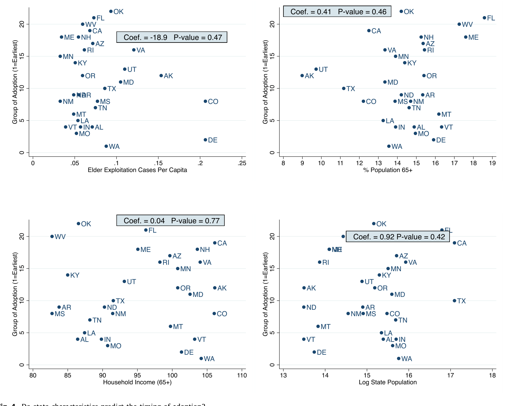
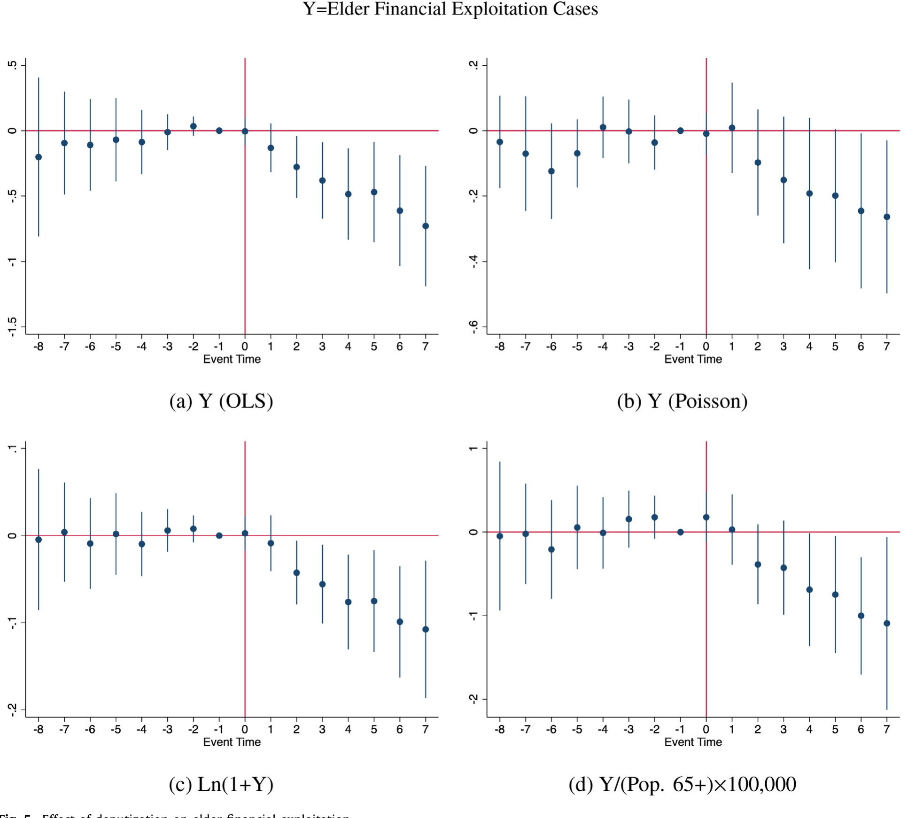
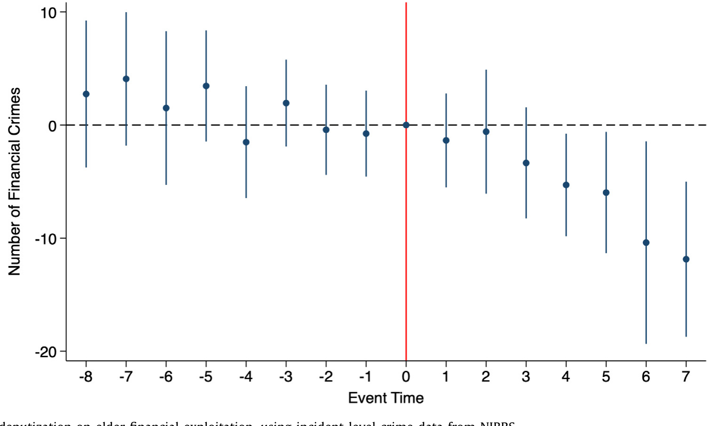
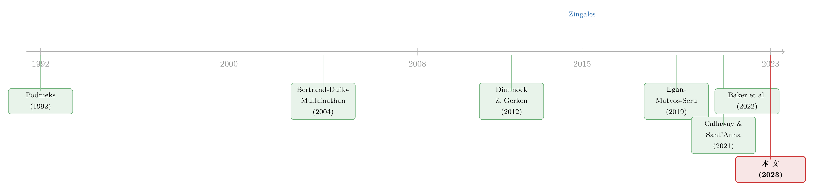

把银行柜员变成「编外警探」：一纸不带激励的法律，能挡住针对老人的诈骗吗？
本文读的是 Carlin, Umar & Yi (2023, Journal of Financial Economics)：2016 年美国 NASAA 推出的 Model Act，把投资顾问与经纪人「授权」为监测老年金融诈骗的「编外警探」——既不给奖金，也不罚漏报。利用各州交错采纳这一法律的准自然实验，作者发现金融专业人士上报的老年财务剥削案件在第一年下降了约一个标准差的 3%、第二年约 7%，FBI 的犯罪数据也同步下降，且效果在「越孤独的老人」身上越强。一项不带任何显性激励的「许可型」法律，居然真的奏效了。
1 一个不带激励的「授权」，凭什么管用？
先讲一个让人不太舒服的事实。
根据美国财政部的数据，2013 到 2019 年间，金融机构上报的针对老年人的可疑财务活动金额累计高达 $21.8 billion；DeLiema et al. (2020) 则发现，过去五年里有 8.7% 的美国老人曾是诈骗的受害者。更扎心的是，骗子往往不是陌生人——CFPB 对 1051 个案例的抽样显示，51% 由陌生人实施，但有 36% 来自家人、25% 来自照护者。当作案的是枕边人、是子女、是每天给你端药的护工时，损失也最惨重：家庭成员平均偷走受害者净资产（不含房产）的 28%。而随着美国 65 岁以上人口在未来四十年从 15.2% 升到 23.4%，这个问题只会越来越大。
问题摆在这里：这么大体量、这么隐蔽的犯罪，监管者根本不可能靠自己一个一个去抓。
于是监管者想了个办法——把离钱最近的人拉进来当哨兵。2016 年，北美证券管理者协会（NASAA）通过了一部听上去拗口的法律：《保护脆弱成年人免受财务剥削的示范法》（NASAA Model Act，下称 Model Act）。它给金融专业人士两项新权力：第一，可以主动联系客户预留的「可信联系人（trusted contact）」核实情况，绕开此前严格的隐私法限制；第二，遇到可疑支出时，可以暂时冻结账户划款（halt disbursements）最多 15–25 个工作日。
但这里有一个最关键、也最反直觉的设计：这部法律是「许可型（permissive）」的，不是「强制型」。它只是说「你可以这么做」，却既不给抓住骗子的人发奖金，也不罚那些没看出来的人。换句话说，没有胡萝卜，也没有大棒。
这正是本文真正想问的那个大问题：在金融业里，这种「只授权、不激励」的许可型治理（permissive governance）究竟有没有用？洗钱、恐怖融资、反欺诈的监测，背后用的全是这套逻辑——要么问题规模大到无法对所有监测者发奖励，要么犯罪太隐蔽、不该让金融机构为「没看出来」负责（Levinson, 2008）。可它到底有没有效，学界几乎一无所知，因为这种大规模的准自然实验太罕见了（Zingales, 2015）。
2 识别策略：把「谁先采纳」当成一场抽签
要回答「管不管用」，最大的拦路虎是内生性：会不会是那些老年诈骗本来就在好转的州，才更积极地立法？如果是，那「法律→案件下降」的因果就成了倒果为因。
作者的运气在于，Model Act 不是全国一夜之间铺开的，而是各州在 2016 到 2020 年间陆陆续续、错峰采纳的——到 2020 年底，共有 30 个州落地了类似条款。这种「交错采纳（staggered adoption）」天然提供了一个动态的、交错的双重差分（staggered difference-in-differences, DiD）设计：已采纳的州是处理组，尚未采纳的州是对照组，处理时点因州而异。

Figure 2: Staggered adoption of the model act across states
识别假设很直白：各州采纳的时点，与那些本来就会影响老年财务诈骗的因素无关。作者花了相当篇幅替这个假设辩护。他们检验了「一个州是否采纳、何时采纳」能否被它过去的诈骗案件数、老年人口规模等可观测特征预测——结论是基本预测不了。

Figure 4: Do state characteristics predict the timing of adoption?
加上平行趋势（parallel trends）在处理前确实成立，这场「立法抽签」就基本站得住了。值得一提的是，作者老老实实地用了 Goodman-Bacon (2021)、Callaway & Sant'Anna (2021) 这些新一代的交错 DiD 估计量，并参照 Baker et al. (2022) 的告诫去处理「坏对照组」问题——在 2023 年的 JFE 上，这已经是交错 DiD 论文的标准动作了（关于交错 DiD 在期限结构里会遇到的坑，可参见《期限结构会自己动：当双重差分撞上一条收益率曲线》）。
一个容易被忽略的细节：FINRA 也在 2018 年 2 月 5 日全国统一推出了内容相近的 Rule 2165 与 4512。作者在 Table 1 里把两套规则逐条对比，并把这个全国性冲击在估计中加以剥离——否则它会污染各州交错采纳的识别。
3 数据：两把尺子，量同一件事
作者的聪明之处在于，他不只用了一个被剥削的度量，而是用了两把性质完全不同的尺子，互相印证。
第一把尺子，是美国财政部（FinCEN）的县级、月度老年财务剥削案件数——这些是金融专业人士主动填写「可疑活动报告（Suspicious Activity Report, SAR）」上报的，其中约 80% 最终导致了真实的财务损失（CFPB, 2019）。这里有个制度细节很重要：上报到财政部有一个 $5000 的强制门槛，门槛之上必须报、之下可自行裁量。
第二把尺子，是 FBI 管理的「全国事件本位报告系统（National Incident-Based Reporting System, NIBRS）」里、由地方执法机构上报的州级、月度老年人犯罪案件数（Kaplan, 2022）。
为什么要这第二把尺子？这正是本文识别上最讲究的一步。
4 主要结果：案件下降了，但「为什么下降」才是关键
先看主结果。利用第一把尺子，作者估计 Model Act 让金融专业人士上报的老年财务剥削月度案件数，在采纳后第一年下降了约一个标准差的 3%、第二年约 7%。

Figure 5: Effect of deputization on elder financial exploitation
接着，一个自然的问题是：案件「上报数」下降，到底是好事还是坏事？
这正是许可型法律的微妙之处。报告减少可能有两种截然相反的解释。乐观的版本是：法律真的让骗子下手前就被拦住了，实际犯罪减少了。但悲观（也更要命）的版本是：会不会只是「筛查质量变好」——顾问打个电话给可信联系人，把一桩本来要上报的可疑案件澄清了，于是报告少了，但真实的犯罪一桩没少？如果是后者，那这部法律的「效果」就只是统计幻觉。
于是反转出现了——这就是第二把尺子的用武之地。NIBRS 记录的是地方警方立案的真实犯罪，而不是金融机构的「上报行为」。如果下降只是筛查口径变了，NIBRS 不该动；可作者发现，Model Act 通过后，NIBRS 里针对老年人的金融犯罪也显著下降了。

Figure 6: Effect of deputization on elder financial exploitation, using incident-level crime data from NIBRS
两把尺子同向，基本排除了「只是报告变少、犯罪没变」的替代解释。真实的剥削确实被压下去了。
那么，机制是什么？作者给出三条互相加强的逻辑：（1）新权力让顾问能更早、更快地中止可疑划款，很多案件还没累积到 $5000 的上报门槛就被掐断了；（2）家人或其他潜在加害者，在顾问的电话沟通中、或在客户登记「可信联系人」时，意识到账户多了一道保护，作案的风险预期改变，于是收手——这是一种威慑；（3）当「编外警探」们认真建起可信联系人系统和冻结流程，这套机制本身就成了威慑。阿拉巴马州证券处负责人甚至告诉作者，十桩案子里有九桩，是靠「打个电话给可信联系人 + 把冻结划款当威慑」就处理掉了。
更有说服力的，是横截面上的异质性。如果机制真的是「金融专业人士在监测」，那么哪里的「编外警探」更多、更靠近资金，效果就该更强。作者发现：
- 效果在人均「编外警探」更多的县更强；
- 效果在更多警探隶属于银行控股公司（bank holding company, BHC）的地方更强——这与「财务剥削通常涉及支票/储蓄账户（电汇、支票、借记卡）」高度吻合。要知道，样本里
56.5%的投资顾问和40.6%的经纪人都受雇于 BHC 旗下。
而最打动我的一组结果，是关于社会孤立的。既然社会孤立长期被视为老年受害的首要风险因素（Podnieks, 1992; Choi et al., 1999; Bernatz et al., 2001），那么对越孤独的老人，「外人插一脚」的边际价值就该越大。作者用两个代理变量来度量孤立程度——Facebook 的社会连接指数（social connectedness index, Bailey et al., 2018）和人均宗教教会数——结果一致显示：对越孤立的老人，去代理化（deputization）的保护效果越强。
作者特别提醒：本文的量级很可能低估了去代理化的真实威力。其一，那些超过 $5000 门槛、本会被强制上报、但被顾问提前拦下的「未遂剥削」，根本不会出现在数据里；其二，已有大量文献记录某些金融从业者本身就在频繁作恶、甚至专挑老人下手（Dimmock & Gerken, 2012; Egan et al., 2019）。在一个从业者更干净的行业里，「编外警探」也许会更管用。值得宽慰的是，作者没有发现这些新权力被滥用去剥削老人的证据——针对顾问的监管处罚并未上升。
5 文献脉络：从「金融到底对社会有没有用」到「哨兵真的有用」
把这篇论文放回它所在的研究长河里，会更清楚它的位置。
最上游，是一个朴素却宏大的追问：金融究竟有没有让社会变好？ Zingales (2015) 在他著名的美国金融学会主席演讲里直言，我们缺少干净的大规模实验来回答这个问题。本文恰恰提供了这样一个实验——它属于「金融对社会的正面价值」这一脉络里，难得的实证之作。
中游有两条支流交汇。一条是老年受害的成因：从 Podnieks (1992) 起，社会孤立就被反复确认为首要风险因素，Choi et al. (1999)、Bernatz et al. (2001) 一路接续，到 DeLiema et al. (2020) 给出当代的发生率证据。另一条是金融从业者自身的品行：Dimmock & Gerken (2012) 教我们如何预测投资经理的欺诈，Egan, Matvos & Seru (2019) 则刻画了「金融顾问不端行为的市场」——这条线提醒我们，让从业者当哨兵，前提是哨兵自己别监守自盗。
方法上，本文站在交错 DiD 这一波方法论革新之上：从 Bertrand, Duflo & Mullainathan (2004) 对传统 DiD 标准误的经典质疑，到 Goodman-Bacon (2021)、Callaway & Sant'Anna (2021) 对「交错处理时点」的重新拆解，再到 Baker et al. (2022) 对金融实证里滥用交错 DiD 的警示。

于是这篇论文的坐标就清楚了：它把「许可型治理是否有效」这个老问题，第一次放进一个干净的准自然实验里测量；并用「报告 + 真实犯罪」两把尺子，把「筛查口径变化」和「真实威慑」这两种机制掰开。它和高中理财课能否降低金融犯罪（参见《一门高中理财课，能让金融犯罪少三成？》）、认知衰退如何在确诊前就反映到信用记录里（参见《在确诊之前，信用分已经先开口了》）一道，共同拼出「金融体系如何保护脆弱人群」这张图。
6 评论与延伸（Q&A + 研究方向）
(a) 几个可能的疑问
Q：报告数下降会不会只是「少报」而非「少犯」？
这正是作者最在意的内生性威胁，也是全文设计的精髓。仅看金融机构上报的 FinCEN 案件，确实无法区分「真实犯罪减少」与「筛查后觉得没必要上报」。但 NIBRS 记录的是警方立案的真实犯罪，与金融机构的上报行为无关；两把尺子同向下降，基本排除了纯粹的「少报」解释。
Q：「许可型」和「强制型」法律到底差在哪？为什么本文的发现值得惊讶？
强制型法律带激励（奖励发现、惩罚漏报），效果好不奇怪。本文的反直觉之处在于，Model Act 既无奖励也无惩罚，纯粹靠「赋予权力 + 既有的社会/职业责任感」就压下了犯罪。这说明在金融业里，激励并非让监测奏效的唯一前提——这对洗钱、反恐融资等同样依赖许可型治理的领域意义重大。
Q：会不会是 2018 年全国统一生效的 FINRA 规则在驱动结果，而非各州的 Model Act？
这是个真实的混淆源。作者在 Table 1 里逐条对比两套规则，并在估计中剥离 FINRA 在 2018 年 2 月 5 日的全国冲击；州层面交错采纳的变异，是独立于这个全国性时点的。
Q：交错 DiD 在 2023 年已经被批得很惨，本文的估计可信吗？
作者没有偷懒用传统的双向固定效应，而是采用 Goodman-Bacon (2021)、Callaway & Sant'Anna (2021) 的稳健估计量，并按 Baker et al. (2022) 检查「坏对照组」与异质处理效应。再加上可观测的平行预趋势和「采纳时点不可预测」的证据，识别在同类文献里属于比较扎实的。
Q：效果只有「一个标准差的 3%–7%」，是不是太小了？
量级看似不大，但有两点要记住。其一，这是月度案件数相对标准差的变化，累积效应可观。其二，作者明确指出这是下界：超过
$5000门槛、本会强制上报却被提前拦下的未遂剥削无法观测，未被计入。真实威力很可能更大。
Q：会不会有「编外警探」滥用冻结划款的权力，反过来伤害老人或合法交易？
作者专门查了这一点：没有证据显示这些新权力被用来剥削老人，针对顾问的监管处罚也没有上升。当然，「合法划款被误冻结」造成的便利损失，本文数据难以捕捉，是一个开放问题。
(b) 几个可能的研究问题与提案
- 把「编外警探」逻辑搬到公司债/信用市场的反欺诈监测
- 【经济故事】债券承销商、做市商同样处在「离钱最近」的位置，能第一时间察觉发行人的可疑资金流向或虚假披露。若监管以许可型方式「授权」他们上报而不强制，是否也能在不增加合规负担的前提下降低信用市场欺诈？
-
【可行性】中。需要 TRACE 交易数据 + 某个交错生效的披露/上报规则作为冲击；难点在于找到一个干净的、错峰的「授权」事件，且欺诈本身难以直接观测，可能要借助事后的违约/重述数据作代理。
-
社会孤立 × 外资持有人：流动性提供者会不会也是「哨兵」？
- 【经济故事】本文发现「越孤立的受害者，第三方介入价值越高」。类比到信用市场：当一只债券的持有人高度分散、彼此孤立（缺乏协调监督）时，是否更依赖外部中介或主导型外资机构充当「监督哨兵」？
-
【可行性】中。需要债券层面的持有人结构数据（如 eMAXX / Morningstar）度量「持有人孤立度」，并找到一次改变中介监督激励的制度冲击；识别外资持有人的监督角色需要额外的工具变量。
-
冻结划款权的「误伤」成本：合法交易被延迟的代价
- 【经济故事】许可型授权赋予顾问冻结账户的权力，本文证明它压低了犯罪，却没量化它对合法、紧急资金需求的延误成本。一项政策的净福利，取决于「拦住的坏交易」减去「误伤的好交易」。
-
【可行性】中偏低。理想数据是账户级的划款请求与冻结记录（含最终判定为合法/欺诈），这类数据极难获得，多半要与单家机构合作或依赖监管内部数据。
-
门槛效应：
$5000强制上报线附近的「掐断」行为 - 【经济故事】作者推测很多剥削在逼近
$5000门槛前就被拦下。若能在门槛附近做断点设计（RDD），直接观察可疑划款金额分布在$5000处是否出现「堆积/缺口」，就能把这个机制从推测变成证据。 - 【可行性】中。需要金额连续的划款级数据；若 FinCEN/CFPB 的微观数据可申请，断点识别相对干净。
(c) 我的判断
这篇论文最大的贡献，是给「许可型治理在金融业是否有效」这个几乎无人能干净回答的问题，提供了一个设计精良的准自然实验，并用双度量交叉验证漂亮地化解了「报告下降 ≠ 犯罪下降」的核心质疑。它把金融专业人士对社会的正向外部性，从理念落成了可测量的因果效应——这在「金融到底有没有用」的大辩论里，是难得的正面证据。
我对识别的担忧主要有二。其一，NIBRS 的覆盖在各州、各年并不均匀，地方执法机构的上报本身就是交错铺开的，这与 Model Act 的交错采纳是否存在相关，值得更细的检验。其二，社会孤立的两个代理变量——Facebook 连接指数与人均教会数——都带着浓厚的地域文化色彩，它们与「采纳时点」是否真的正交，我希望看到更直接的安慰剂检验。
后续我最想看到的，是把这套「编外警探」逻辑推到信用市场与外资持有人的监督场景里，以及对「冻结权误伤合法交易」的成本做一次诚实的核算——只有把账的两边都算清，才能真正回答许可型治理「值不值」。
参考文献
- Bailey, M., Cao, R., Kuchler, T., Stroebel, J., Wong, A. (2018). Social connectedness: measurement, determinants, and effects. Journal of Economic Perspectives 32(3), 259–280.
- Baker, A.C., Larcker, D.F., Wang, C.C. (2022). How much should we trust staggered difference-in-differences estimates? Journal of Financial Economics 144(2), 370–395.
- Bernatz, S., Aziz, S., Mosqueda, L. (2001). Financial abuse. In The Encyclopedia of Elder Care. Springer Publishing Co.
- Bertrand, M., Duflo, E., Mullainathan, S. (2004). How much should we trust differences-in-differences estimates? Quarterly Journal of Economics 119(1), 249–275.
- Callaway, B., Sant'Anna, P.H. (2021). Difference-in-differences with multiple time periods. Journal of Econometrics 225(2), 200–230.
- Carlin, B., Umar, T., Yi, H. (2023). Deputizing financial institutions to fight elder abuse. Journal of Financial Economics 149, 557–577.
- CFPB (2019). Suspicious Activity Reports on Elder Financial Exploitation: Issues and Trends. Consumer Financial Protection Bureau.
- Choi, N.G., Kulick, D.B., Mayer, J. (1999). Financial exploitation of elders: analysis of risk factors based on county adult protective services data. Journal of Elder Abuse & Neglect 10(3–4), 39–62.
- DeLiema, M., Deevy, M., Lusardi, A., Mitchell, O.S. (2020). Financial fraud among older Americans: evidence and implications. Journals of Gerontology 75(4), 861–868.
- Dimmock, S.G., Gerken, W.C. (2012). Predicting fraud by investment managers. Journal of Financial Economics 105(1), 153–173.
- Egan, M., Matvos, G., Seru, A. (2019). The market for financial adviser misconduct. Journal of Political Economy 127(1), 233–295.
- FinCEN (2019). Elders Face Increased Financial Threat from Domestic and Foreign Actors. U.S. Department of Treasury.
- Goodman-Bacon, A. (2021). Difference-in-differences with variation in treatment timing. Journal of Econometrics 225(2), 254–277.
- Kaplan, J. (2022). Jacob Kaplan's Concatenated Files: National Incident-Based Reporting System (NIBRS) Data, 1991–2020. ICPSR.
- Levinson, B. (2008). Unwarranted deputization: increased delegation of law enforcement duties to financial institutions undermines American competitiveness. SSRN 2711938.
- Podnieks, E. (1992). National survey on abuse of the elderly in Canada. Journal of Elder Abuse & Neglect 4(1–2), 5–58.
- Zingales, L. (2015). Presidential address: does finance benefit society? Journal of Finance 70(4), 1327–1363.